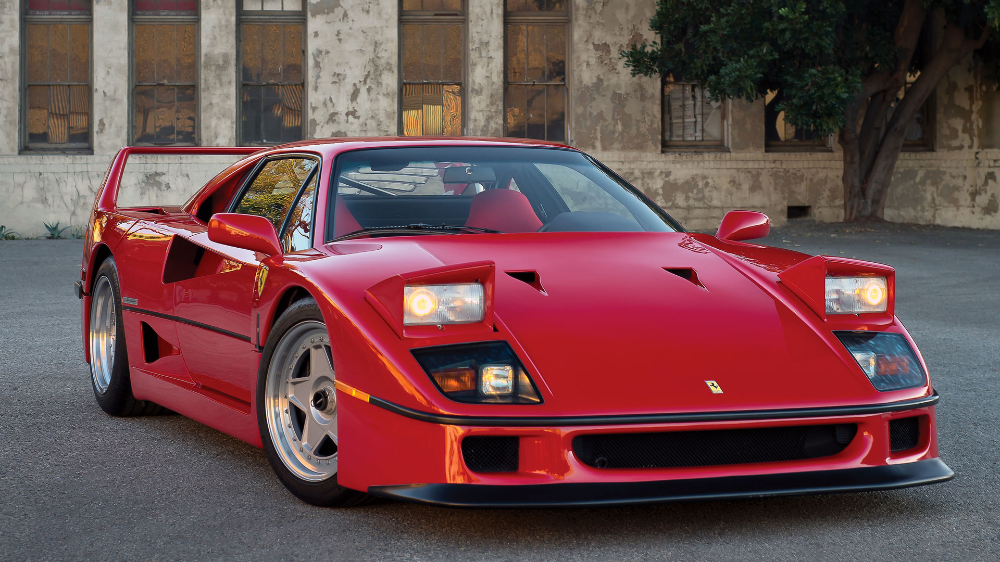
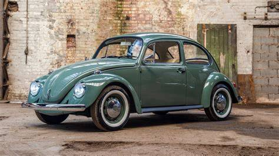
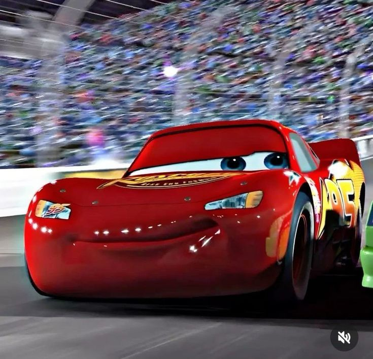
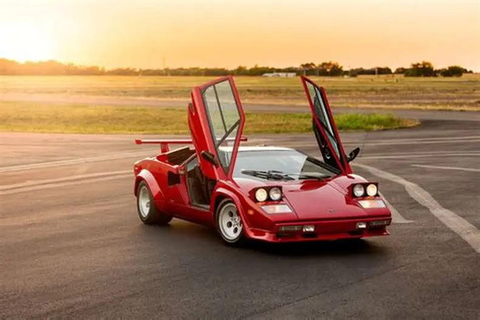
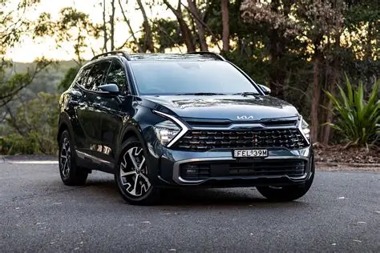
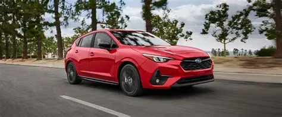
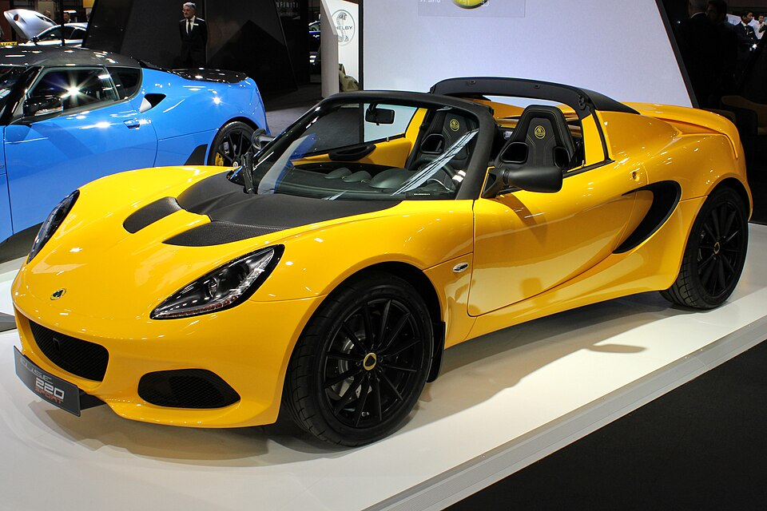

Album de Autos
Únicos en el País
En esta página encontraras todo tipo de autos, exóticos, deportivos, muscle, clásicos y más.

El segundo superdeportivo de la Casa de Maranello. 40 años después del primer Ferrari de serie. Una berlinetta con ADN de competición, diseñada por Pininfarina y fabricada con materiales compuestos.

El Mercedes-Benz 300 SL (código de chasis W198) es un automóvil deportivo apodado Widowmaker, porque muchos conductores murieron al estrellarse con su 300 SL. Conocido por sus distintivas puertas de ala de gaviota y por ser el primer automóvil en montar un motor de gasolina con inyección directa de combustible.

El BMW M3 GTR de 2001 es uno de los capítulos más destacados de la historia de BMW, el auto desarrollado para ser el arma perfecta en los circuitos de la American Le Mans Series, además de una obligatoria versión de calle que hasta la fecha es el M3 más radical y exclusivo fabricado jamás por la firma de Munich, siendo además el primer BMW M3 de calle en montar un V8.

El Volkswagen Beetle o Escarabajo es un coche que ha marcado profundamente la historia tanto de Volkswagen como de la industria automotriz. Es un automóvil de cuatro plazas con motor trasero y tracción trasera, disponible con carrocerías sedán y descapotable de dos puertas. El Escarabajo es un coche de culto en numerosas subculturas, como la hippie y el tuneo.

El Ford Mustang Shelby GT500 de 1967 representa un momento crucial en la historia del automovilismo estadounidense. Más que una simple variante de alto rendimiento, este vehículo encarnó la colaboración definitiva entre Ford y el legendario Carroll Shelby, resultando en un muscle car que estableció nuevos estándares de potencia y presencia.

El Chevrolet Corvette (C6) es la sexta generación del deportivo Corvette. Es el primer Corvette con faros al aire (en lugar de faros ocultos) desde el modelo de 1962. Las variantes de competición incluyen la C6.R, ganadora del campeonato GT1 de la American Le Mans Series y de las 24 Horas de Le Mans GTE-Pro.

El Lamborghini Countach es un automóvil deportivo, con carrocería berlinetta hecha de aluminio y fibra de vidrio, tracción trasera y un motor V12 de gasolina El diseño de su carrocería se popularizó por su forma de cuña, e incorpora el concepto de diseño de «cabina avanzada», lo que implica que el habitáculo está adelantado para albergar un motor central-trasero.

El nuevo Kia Sportage HEV, inspirado en los contrastes de la naturaleza, muestra una nueva visión de futuro en la que se combinan potencia y elegancia. Disfruta más de cada desplazamiento gracias a tecnologías avanzadas y un habitáculo grande y versátil. Además, también está disponible en versión ICE y MHEV.

El Subaru Impreza es un coche compacto que se fabrica por el fabricante japonés Subaru desde 1992. Se introdujo como reemplazo del Leone, con los motores de la serie EA del predecesor sustituidos por la nueva serie EJ. Ahora está en su sexta generación.

El Lotus Elise es un automóvil deportivo Roadster biplaza con motor central-trasero montado transversalmente de tracción trasera, que fue concebido a principios de 1994 y presentado en septiembre de 1996 por el fabricante de automóviles británico Lotus Cars, marcando su renacimiento en el segmento de los deportivos pequeños en los años 90.

El Pagani Zonda R es un coche de día de circuito desarrollado y fabricado por el fabricante italiano de coches deportivos Pagani. Se presentó en el Salón del Automóvil de Ginebra de 2007, utilizando el motor GT 112 de 6.0 litros procedente de la versión de competición del Mercedes-Benz CLK-GTR.

La Hilux 1997 es un modelo icónico que ha sido utilizado en la minería y construcción, lo que la convierte en una opción valiosa para quienes buscan un vehículo todoterreno. Este modelo incorpora detalles de diseño innovadores y ofrece varias opciones de motorización, adaptándose a diferentes necesidades de uso.